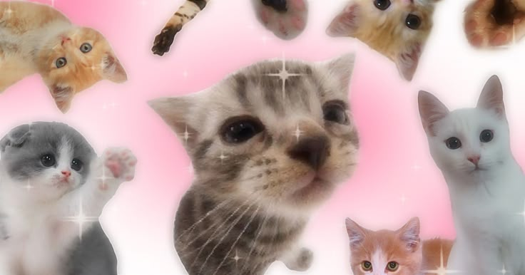

The Joy of Little Paws
Kittens are wonderful little bundles of joy that can make any home feel warmer and happier. With their tiny paws, fluffy fur, and curious eyes, they love to explore every corner of the room. Whether they are chasing a piece of string, pouncing on a toy, or just running around for no reason, their playful energy always brings a smile to our faces. It is impossible to feel lonely when you have a tiny, active kitten around.
After a busy hour of play, these little cuties love nothing more than finding a cozy spot to curl up and sleep. There is nothing more relaxing than the soft sound of a happy cat purring gently next to you. Kittens and adult cats quickly become more than just pets; they become true members of the family, filling our lives with endless love, gentle cuddles, and sweet memories every single day.
Meow =^.^=